Scenario TTC2011SimpleMigration
Source model:

Target model: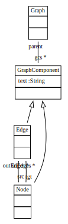
Migration extension: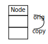
Create example source graph: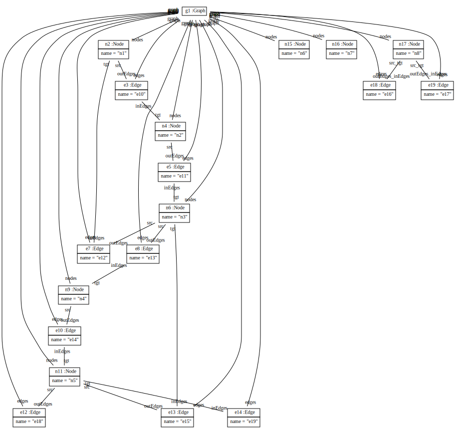
 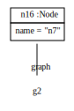
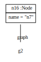

private void simpleMigrationPerPattern(Graph graph)
{
//==========================================================================
ModelPattern migrateGraph = new ModelPattern();
GraphPO srcGraphPO = migrateGraph.hasElementGraphPO(graph);
migrateGraph.startCreate();
GraphPO tgtGraphPO = migrateGraph.hasElementGraphPO();
//==========================================================================
int noOfMatches = 0;
ModelPattern migrateNodesPattern = new ModelPattern();
srcGraphPO = migrateNodesPattern.hasElementGraphPO(graph);
NodePO srcNodePO = srcGraphPO.hasNodes();
tgtGraphPO = migrateNodesPattern.hasElementGraphPO(tgtGraphPO.getCurrentMatch());
migrateNodesPattern.startCreate();
NodePO tgtNodePO = tgtGraphPO.hasGcsNode();
tgtNodePO.hasOrig(srcNodePO);
while (migrateNodesPattern.getHasMatch())
{
tgtNodePO.withText(srcNodePO.getName());
noOfMatches++;
migrateNodesPattern.findNextMatch();
}
systemout = "Number of migrated nodes: " + noOfMatches;
//==========================================================================
noOfMatches = 0;
ModelPattern migrateEdgesPattern = new ModelPattern();
srcGraphPO = migrateEdgesPattern.hasElementGraphPO(graph);
EdgePO srcEdgePO = srcGraphPO.hasEdges();
tgtGraphPO = migrateEdgesPattern.hasElementGraphPO(tgtGraphPO.getCurrentMatch());
migrateEdgesPattern.startCreate();
EdgePO tgtEdgePO = tgtGraphPO.hasGcsEdge();
while (migrateEdgesPattern.getHasMatch())
{
tgtEdgePO.withText(srcEdgePO.getName());
ModelPattern migrateSrcHalfLinkPattern = new ModelPattern();
NodePO copySrcNodePO = migrateSrcHalfLinkPattern.hasElementEdgePO(srcEdgePO.getCurrentMatch())
.hasSrc()
.hasCopy();
EdgePO copyEdgePO = migrateSrcHalfLinkPattern.hasElementEdgePO(tgtEdgePO.getCurrentMatch());
migrateSrcHalfLinkPattern.startCreate();
copyEdgePO.hasSrc(copySrcNodePO);
ModelPattern migrateTgtHalfLinkPattern = new ModelPattern();
NodePO copyTgtNodePO = migrateTgtHalfLinkPattern.hasElementEdgePO(srcEdgePO.getCurrentMatch())
.hasTgt()
.hasCopy();
EdgePO copyEdgePO2 = migrateTgtHalfLinkPattern.hasElementEdgePO(tgtEdgePO.getCurrentMatch());
migrateTgtHalfLinkPattern.startCreate();
copyEdgePO2.hasTgt(copyTgtNodePO);
noOfMatches++;
migrateEdgesPattern.findNextMatch();
}
systemout += "nNumber of migrated Edges: " + noOfMatches;
}
Result graph: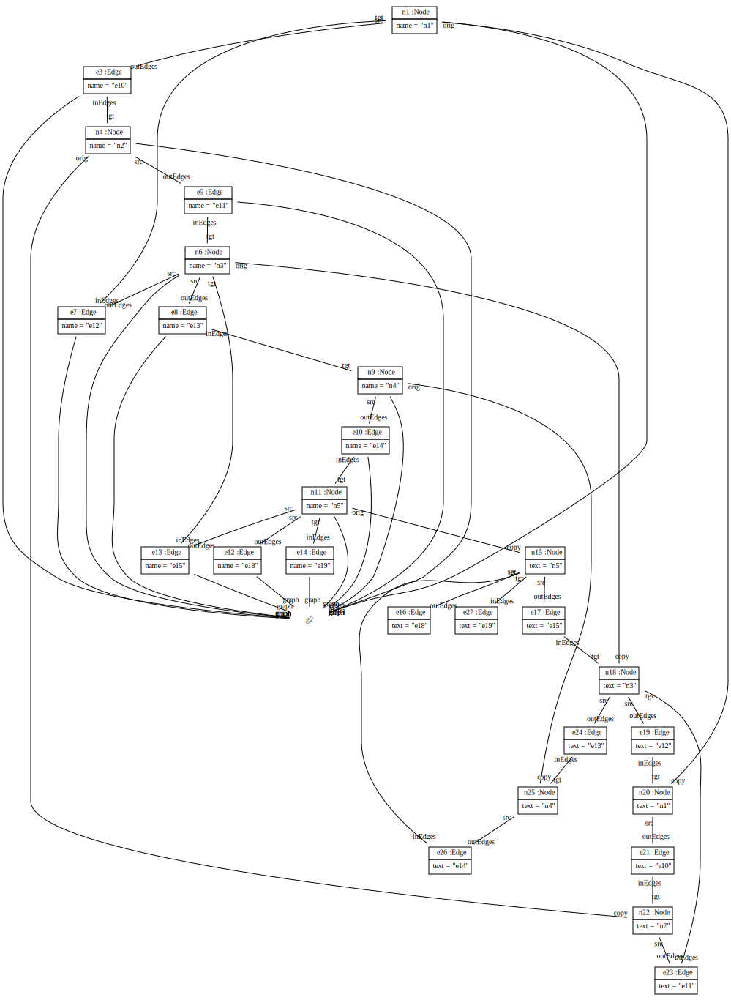 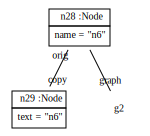 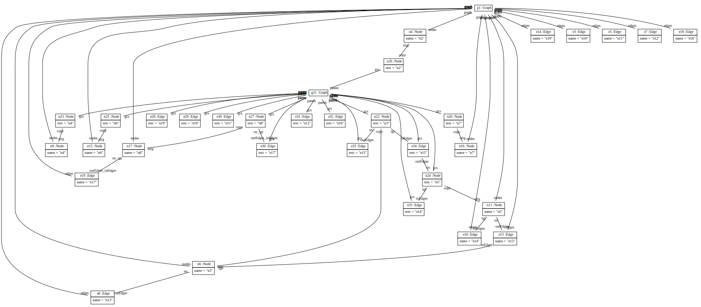 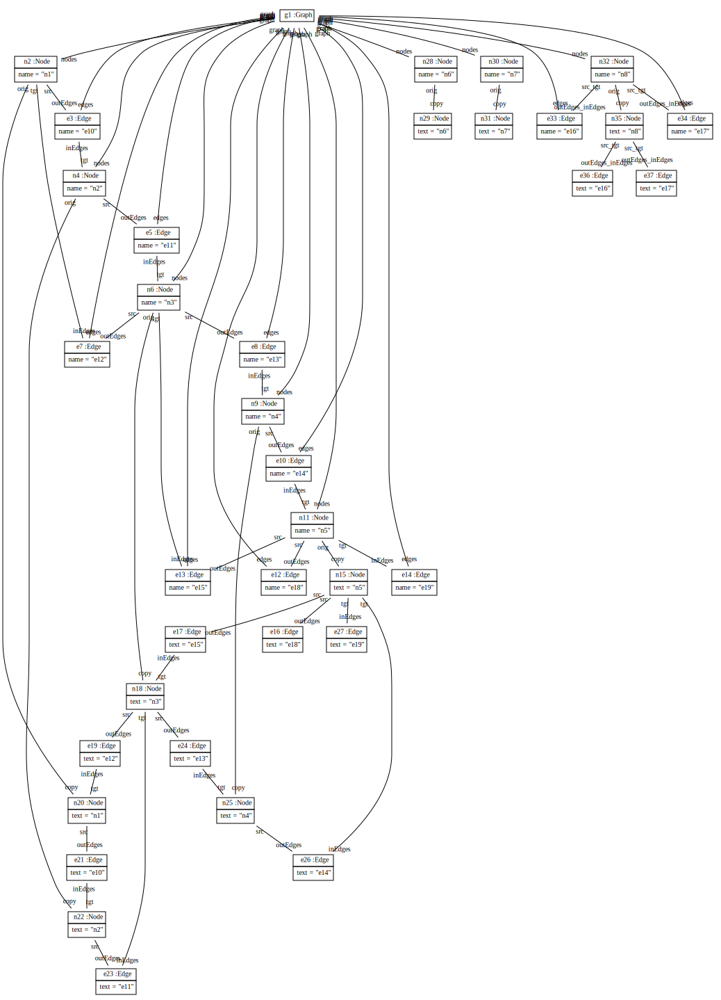
Number of migrated nodes: 8 Number of migrated Edges: 10
private void simpleMigrationInJava(Graph origGraph)
{
int noOfMatches = 0;
if (origGraph != null)
{
Graph copyGraph = new Graph();
// migrate nodes
for (Node origNode : origGraph.getNodes())
{
Node copyNode = (Node) copyGraph.createGcsNode()
.withOrig(origNode)
.withText(origNode.getName());
noOfMatches++;
}
systemout = "Number of migrated nodes: " + noOfMatches;
// migrate edges
for (Edge origEdge : origGraph.getEdges())
{
Edge copyEdge = (Edge) copyGraph.createGcsEdge()
.withText(origEdge.getName());
Node origSrcNode = origEdge.getSrc();
if (origSrcNode != null)
{
copyEdge.setSrc(origSrcNode.getCopy());
}
Node origTgtNode = origEdge.getTgt();
if (origTgtNode != null)
{
copyEdge.setTgt(origTgtNode.getCopy());
}
}
}
}
Result graph: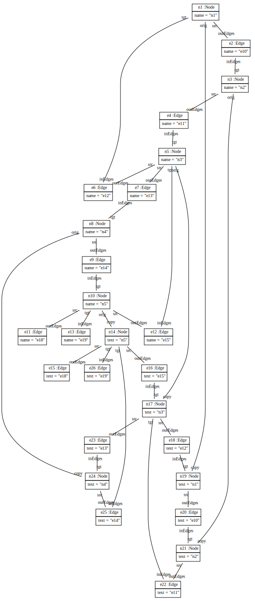

 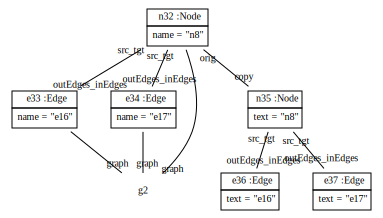
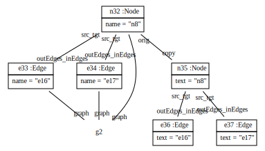
Number of migrated nodes: 8
private Graph simpleMigrationByCloning(Graph graph)
{
JsonArray jsonArray = CreatorCreator.createIdMap("hg").toJsonArray(graph);
Graph copyGraph = (Graph) CreatorCreator.createIdMap("hg").readJson(jsonArray);
GraphComponentSet gcs = new GraphComponentSet();
gcs.addAll(copyGraph.getNodes());
gcs.addAll(copyGraph.getEdges());
for (GraphComponent comp : gcs)
{
comp.setParent(comp.getGraph());
comp.setGraph(null);
comp.setText(comp.getName());
comp.setName(null);
}
return copyGraph;
}
Result graph: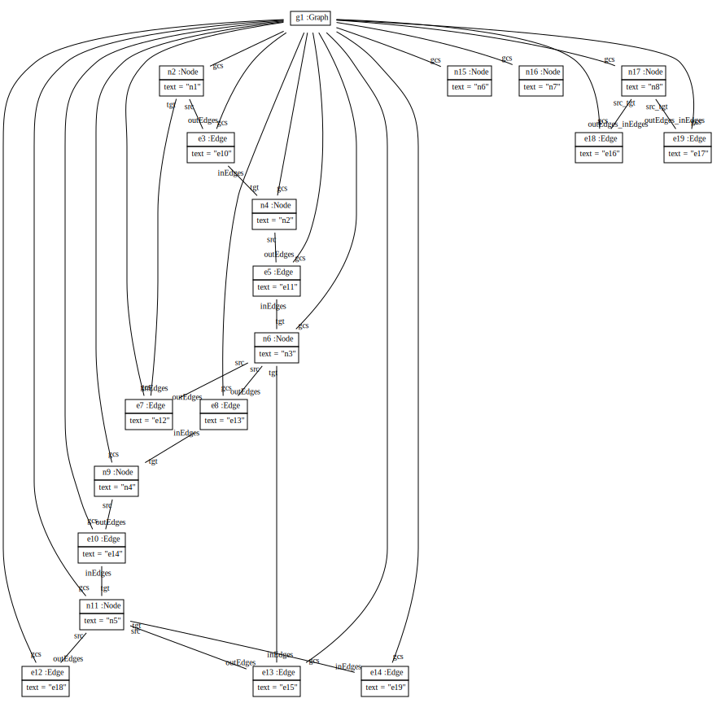
private Graph simpleMigrationByJsonArray(Graph graph)
{
JsonIdMap idMap = CreatorCreator.createIdMap("hg");
JsonArray jsonArray = idMap.toJsonArray(graph);
for (int i = 0; i < jsonArray.size(); i++)
{
JsonObject jsonObject = jsonArray.getJSONObject(i);
String className = jsonObject.getString(JsonIdMap.CLASS);
if (Graph.class.getName().equals(className))
{
JsonObject jsonProps = jsonObject.getJsonObject(JsonIdMap.JSON_PROPS);
// migrate nodes and edges to gcs
JsonArray gcsArray = jsonProps.getJsonArray(Graph.PROPERTY_NODES);
gcsArray.addAll(Arrays.asList(jsonProps.getJsonArray(Graph.PROPERTY_EDGES).toArray()));
jsonProps.put(Graph.PROPERTY_GCS, gcsArray);
jsonProps.remove(Graph.PROPERTY_NODES);
jsonProps.remove(Graph.PROPERTY_EDGES);
}
else if (Node.class.getName().equals(className))
{
JsonObject jsonProps = jsonObject.getJsonObject(JsonIdMap.JSON_PROPS);
// migrate name to text
jsonProps.put(Node.PROPERTY_TEXT, jsonProps.get(Node.PROPERTY_NAME));
jsonProps.remove(Node.PROPERTY_NAME);
// migrate graph to parent
jsonProps.put(Node.PROPERTY_PARENT, jsonProps.get(Node.PROPERTY_GRAPH));
jsonProps.remove(Node.PROPERTY_GRAPH);
}
else if (Edge.class.getName().equals(className))
{
JsonObject jsonProps = jsonObject.getJsonObject(JsonIdMap.JSON_PROPS);
// migrate name to text
jsonProps.put(Node.PROPERTY_TEXT, jsonProps.get(Node.PROPERTY_NAME));
jsonProps.remove(Node.PROPERTY_NAME);
// migrate graph to parent
jsonProps.put(Node.PROPERTY_PARENT, jsonProps.get(Node.PROPERTY_GRAPH));
jsonProps.remove(Node.PROPERTY_GRAPH);
}
}
Graph copyGraph = (Graph) CreatorCreator.createIdMap("hg").readJson(jsonArray);
return copyGraph;
}
Result graph: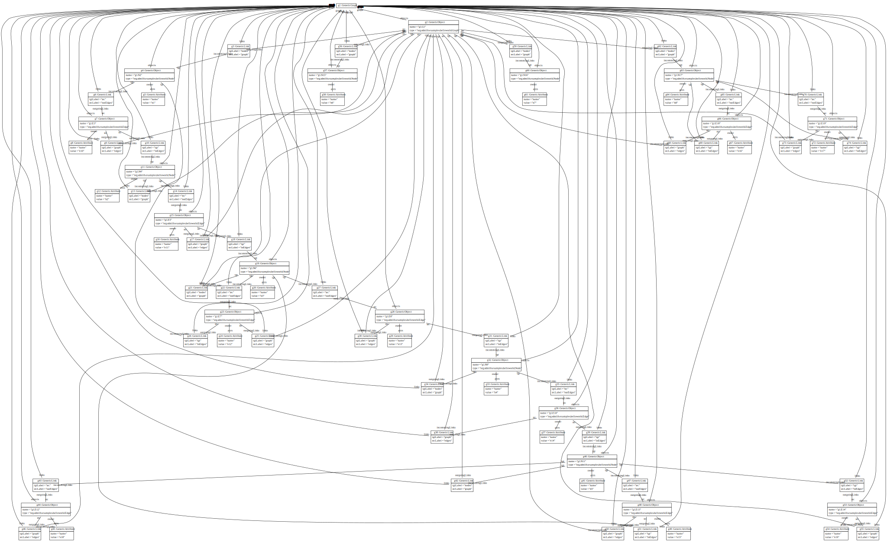
private Graph simpleMigrationByGenericGraph(Graph origGraph)
{
GenericGraph genGraph = new Specific2Generic().convert(CreatorCreator.createIdMap("g1"), origGraph);
// rename name to text attributes
new org.sdmlib.models.objects.creators.ModelPattern()
.hasElementGenericGraphPO(genGraph)
.hasObjects()
.hasAttrs()
.hasName(Node.PROPERTY_NAME)
.startCreate()
.hasName(Node.PROPERTY_TEXT)
.allMatches();
// rename graph--nodes links to parent--gcs links
new org.sdmlib.models.objects.creators.ModelPattern()
.hasElementGenericGraphPO(genGraph)
.hasLinks()
.hasTgtLabel(Node.PROPERTY_GRAPH)
.startCreate()
.hasTgtLabel(Node.PROPERTY_PARENT)
.hasSrcLabel(Graph.PROPERTY_GCS)
.allMatches();
Graph tgtGraph = (Graph) new Generic2Specific().convert(CreatorCreator.createIdMap("tg"), null, genGraph);
return tgtGraph;
}
Result graph: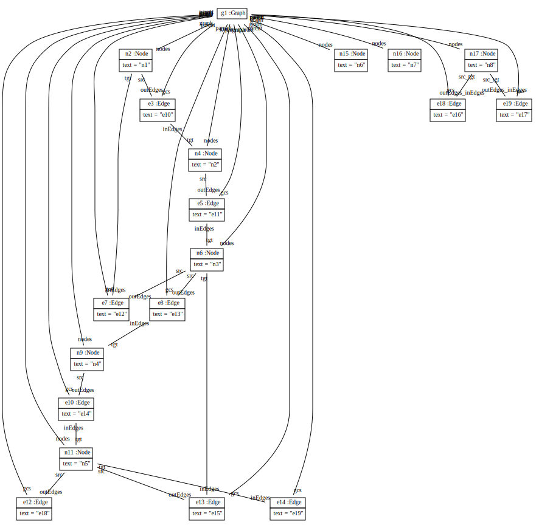
private Graph simpleMigrationToEvenMoreEvolvedGraphByGenericGraph(Graph origGraph)
{
GenericGraph genGraph = new Specific2Generic().convert(CreatorCreator.createIdMap("g1"), origGraph);
// rename name to text attributes
new org.sdmlib.models.objects.creators.ModelPattern()
.hasElementGenericGraphPO(genGraph)
.hasObjects()
.hasAttrs()
.hasName(Node.PROPERTY_NAME)
.startCreate()
.hasName(Node.PROPERTY_TEXT)
.allMatches();
// replace n.l.e.l.n by n.l.n
GenericObjectPO edgePO = new org.sdmlib.models.objects.creators.ModelPattern()
.hasElementGenericGraphPO(genGraph)
.hasObjects()
.hasType(Edge.class.getName());
GenericLinkPO srcLinkPO = edgePO.hasOutgoingLinks().hasTgtLabel(Edge.PROPERTY_SRC);
GenericLinkPO tgtLinkPO = edgePO.hasOutgoingLinks().hasTgtLabel(Edge.PROPERTY_TGT);
GenericObjectPO srcNodePO = srcLinkPO.hasTgt();
edgePO.destroy();
srcLinkPO.destroy();
GenericLinkSet allMatches = tgtLinkPO.startCreate()
.hasSrc(srcNodePO)
.hasSrcLabel(Node.PROPERTY_LINKSFROM)
.hasTgtLabel(Node.PROPERTY_LINKSTO)
.allMatches();
// destroy dangling edges
GenericObjectPO danglingPO = new org.sdmlib.models.objects.creators.ModelPattern()
.hasElementGenericGraphPO(genGraph)
.hasObjects()
.hasType(Edge.class.getName());
danglingPO.destroy();
danglingPO.allMatches();
Graph tgtGraph = (Graph) new Generic2Specific().convert(CreatorCreator.createIdMap("tg"), null, genGraph);
return tgtGraph;
}
Result graph: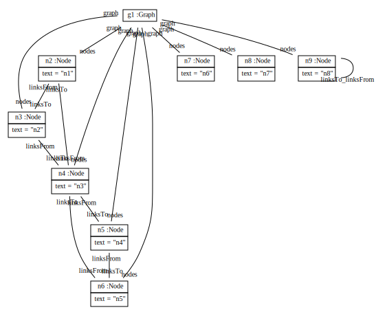